社員インタビュー
■パーソナルボイス
最前線で活躍するプロフェッショナルの皆さんから、これからIT業界を目指す皆さんへ向けて、それぞれの想いを語っていただきました。
鈴木貴之 SIソリューション事業部 課長代理 |
大嶋克也 先端テクノロジー事業部 課長代理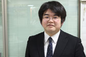 |
{kind=link}
{kind=link}
菊池俊輝 SIソリューション事業部 主任 |
五十嵐圭 インフラ事業部 主任 |
{kind=link}
{kind=link}
西島啓太 インフラ事業部 主任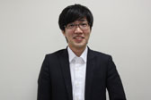 |
宮嶋洸太郎 先端テクノロジー事業部 主任 |
{kind=link}
{kind=link}
武井竜一 インフラ事業部 平成26年度入社 |
Ｍ・Ｉ SIソリューション事業部 平成26年度入社 |
{kind=link}
{kind=link}
小椋雄太 SIソリューション事業部 平成26年度入社 |
三上亮 野球部 キャプテン |
{kind=link}
{kind=link}
■グループトーク
集まったのは、仕事にプライベートに、充実した毎日を過ごしている精鋭4人。
ウイズ・ワンで活躍中の皆さんに、ざっくばらんに語っていただきました。
幸隆志 インフラ事業部 事業部長慶應義塾大学 経済学部卒業 （写真右端）江上達郎 SIソリューション事業部 主任早稲田大学 人間科学部卒業 （写真左端） |
大嶋克也 先端テクノロジー事業部 課長代理筑波大学 大学院 システム情報工学研究科卒業 （写真中右）荒木龍一郎 平成27年度入社 1年目社員山口大学 理学部卒業 （写真中左） |
荒木「僕は学生の時にプログラミングが未経験なのですが、こんな私でもやっていけるのでしょうか。」
幸 「私も未経験だったよ。確かに最初は人より勉強しなければならないし、苦労もしたけど、やる気次第じゃないかな。」
大嶋「自分も、学生時代はロボットのプログラミングをしていたけど、仕事で作るプログラムとは違うから、現場で覚える！（笑）」
荒木「なるほど…。IT業界って、過酷なイメージがありますが、その点も不安です。」
江上「確かに、ピーク時は労働時間が高くなることもあるんやけど、落ち着いてる時は毎日定時上がりやで。」
大嶋「作業の生産性は、工夫次第で改善できるし、そういう意味でもやり甲斐があるよ。」
幸 「先輩や上司が、プロジェクトの管理や作業のフォローをしたり、一丸となって助け合うのもウイズ・ワンの強みかな。」
荒木「少し安心しました。これから頑張りますので、宜しくお願いします！」
江上「あまりかしこまらんと、プライベートの息抜きもほんま必要やで。」
社内イベント
■平成27年度 新入社員歓迎会
5月某日、フレッシュな新入社員を熱烈に歓迎すべく、クルーザーを貸し切り、東京湾を周遊してきました。
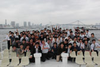
{kind=link}
■平成26年度 お花見
桜の季節、代々木公園にてお花見イベントを実施しました。天候にも恵まれ、楽しい宴会となりました。もちろん最後にはキチンと後片付けも。
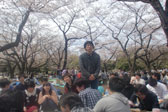
{kind=link}
■平成26年度 タイ社員旅行
約2年に1度の頻度で実施される社員旅行です。今回はタイ王国です！バンコクを観光し、パタヤでリゾート気分を味わいました。最高！！
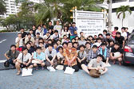
{kind=link}
{kind=link}
■平成25年度 新入社員歓迎会
6月某日、隅田川の穏やかな流れに揺られながら、屋形船で新入社員の歓迎会を実施しました。新鮮な刺身や旬の食材を使った天ぷらが美味でした。
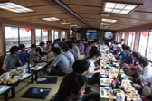
{kind=link}
■平成25年度 上海視察
過去にもネパール、タイ、ベトナム、フィリピン、バングラデシュ、中国（大連）を視察していますが、今回は中国（上海）への視察です。現地のIT関連会社を数社訪問しました。技術レベルが高いことや言語の壁があったこと、または国民性や文化等を学び、非常に良い経験になりました。
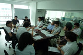
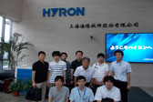
{kind=link}
{kind=link}
■平成25年度 忘年会
毎年恒例の忘年会です。前半の第一部は大真面目に報告や発表を行い、後半の第二部は大笑いに包まれました。このギャップがウイズ・ワンの楽しいところです！
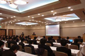
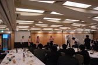
{kind=link}
{kind=link}
■平成24年度 新入社員歓迎会
新入社員を迎え、はとバスのツアーで浅草や東京タワー等のベタな（！？）都内観光を行いました。
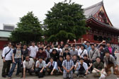
{kind=link}
■平成24年度 防災体験学習施設「そなエリア東京」
前年に起きた東日本大震災を教訓に、防災に対する意識を高めようと体験学習に行ってきました。
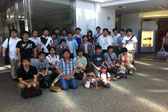
{kind=link}
■平成24年度 忘年会
ラフレさいたまにて、大忘年会を実施しました。芸は身を助ける（？）なのか、ウイズ・ワンには芸達者が多いです（笑）
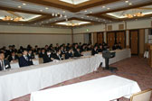
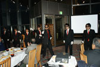
{kind=link}
{kind=link}
■平成23年度 新入社員歓迎会
元気な新入社員を歓迎するために、東京湾でクルージングしました。
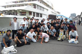
{kind=link}
■平成23年度 バリ社員旅行
年の瀬に社員旅行を実施しました。忘年会をバリ島でやるなんて、ウイズ・ワンならではです！
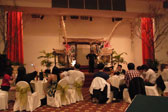
{kind=link}
人財育成
■新入社員育成研修
入社から2ヶ月間は、社内での研修を実施しています。研修の内容は、主にビジネスマナー、情報システムの基礎、プログラミングの3つです。研修後は、事業部に配属となり、現場プロジェクトへの参画となります。
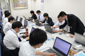
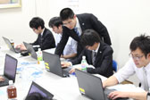
{kind=link}
{kind=link}
技術研修
先輩や上司たちによるスキルアップのための技術研修を、6つのカテゴリに分けて実施しています。
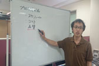
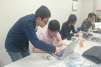
{kind=link}
{kind=link}
- ・PHP研修
- ・Java研修
- ・Andoroid研修
- ・iOS研修
- ・インフラ研修
- ・データベース研修
CakePHPを使い、Webシステムを構築しながら、PHP言語を学びます。
比較的新しいJavaフレームワークのPlayFrameworkを使い、Webシステムを構築しながら、JavaとMVCを学びます。
Androidアプリを作成しながら、Andoridプログラミングを学びます。
iOSアプリを作成しながら、Objective-CやSwiftを学びます。
サーバー及びネットワークの設計／構築を行いながら、各種OSやミドルウェアの特性を学びます。
PostgreSQLを使い、講義と実践を織り交ぜながら、データベースについて学びます。
■目標管理
成長の計画とチャレンジ精神社員の能力開発及び職業人としての自己実現を支援する制度として、目標管理というものを実施しています。まず、配属先の上司と共に、3年間のキャリアプランを作成します。キャリアプランを基に、半期ごとにチャレンジする目標を設定します。本人の努力だけでなく、上司や先輩の支援があり、目標を達成していくことによって、一段上のエンジニアへと成長していきます。
|
募集要項
| 募集職種 | システムエンジニア、プログラマー、オペレーター |
|---|---|
| 処遇 | 給与 経験・能力を考慮し、決定します。 |
| 賞与 | 年2回（6月、12月） |
| 諸手当 | 通勤手当(交通費全額支給)／時間外手当／家族手当／住宅手当／技術手当 他 |
| 勤務時間 | 標準労働時間帯9:00～18:00。本社勤務時はフレックスタイム制適用。 |
| 休日休暇 | 完全週休2日制(土・日)、祝日、国民の休日、年末年始、特別休日、年次有給休暇 他 |
| 社会保険 | 健康保険組合／厚生年金／労働保険(労災・雇用)／養老保険(ニッセイみらいのかたち)／団体総合生活補償保険(レクリエーション保険)／
特別退職金共済制度／情報サービス企業年金基金(確定給付型年金)／確定拠出年金(401K)／
独立行政法人勤労者退職金共済機構中小企業退職金共済 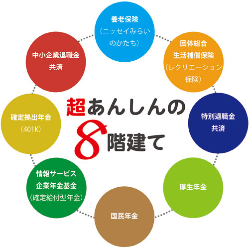 |
| 各種制度 | 慶弔見舞金制度／財産形成貯蓄預金制度(住宅、年金)／退職金制度／親睦会／旅行会 |
| 応募方法 |
郵送で応募：履歴書（写真貼付、希望職種明記）と職務経歴書（書式自由）及び「採用応募者の個人情報の取扱いについて」の同意書を下記問合せ先住所までご郵送ください。 〒103-0011 東京都中央区日本橋大伝馬町3番3号日本橋大伝馬町ビル E-mailで応募：履歴書（希望職種明記）と職務経歴書（書式自由）及び「採用応募者の個人情報の取扱いについて」の同意書を添付ファイルとして、下記問合せ先E-mailアドレス宛てに送信してください。 info@wiss1.co.jp 応募の秘密は厳守致します。また、応募書類については返却いたしませんので、あらかじめご了承願います。 下記より、「採用応募者の個人情報の取扱いについて」をダウンロードできます。 内容を確認し同意の上、日付と著名の記入お願いします。 採用情報の取扱いについて WORD PDF |